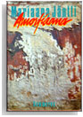

This chapter of my dissertation was published in
Scandinavian Studies (Summer 2004, Volume 76, Number 2, Pages 279 - 298).
It is also available online in digital format from Amazon.com.
In it I discuss:
- magical realism
- narrative structure
- bodies/subjects

Mariaana Jäntti's Amorfiaana |
| The beginning of my article on Amorfiaana: |
"Why am I telling you this story?" ["Miksi kerron tämän tarinan sinulle?"] Thus begins Mariaana Jäntti's 1986 novel, Amorfiaana, in which
Jäntti uses magical realism and narrative techniques to probe the ontologies of textual and physical bodies.
Since the novel's release, Jäntti has been compared to Franz Kafka, James Joyce, Lewis Carroll, Walter
Kilpi, Virginia Woolf, and Hélène Cixous. As the list demonstrates, Jäntti's style impresses readers, but
proves hard to place. Philip Landon describes Amorfiaana as the most radically experimental work in the
Finnish language (34). I will show how Jäntti's narrative transcends reality's boundaries with magical
realism and the boundaries of consciousness with its amorphous array of narrative styles to explore the
constantly changing ontologies of subject formation.
Amorfiaana's characters are united by their presence in one building and by the fact that the
narrative rarely leaves the building. Jäntti organizes the text into chapters designated with locative headers
like "cellar," "kitchen, hallway, and room," and "room." Readers voyeuristically watch as a miscellaneous
conglomeration of events unfolds in the building, including legal proceedings, seedy sexual encounters,
illness, decay, meals, domestic squabbles, and housework. Jäntti taunts readers with sketchy details about
the fatal tricycle accident that frames the rest of the book's events, forcing readers to rubberneck, trying to
see what really happens. Jäntti draws readers in with hints of unspecified secrets, perhaps incest, abortion
or child abuse, but never resolves whether they are true or false or partially true. Her readers are left in a
state of confusion, wondering how the characters are related, who is telling the story, what is actually
happening.
At the time this was written, Jäntti's answer to the nouveau roman had inspired two full-length articles, focusing
largely on the text's relationship to theory, particularly Freud, Lacan, Kristeva and Cixous. Kristina
Malmio interprets the novel's characters as representations of body parts, bodily functions and
psychological circumstances and the tricycle accident as a metaphor for female authorship. Anna
Makkonen, on the other hand, devotes more attention to the novel's form, classifying it as poststructuralist,
a cross between an artist's self-portrait and a female bildungsroman. Makkonen also analyzes recurrent
themes including the Daedalus myth, gender rolls, and numerical and maternal images. In common with
Malmio and Makkonen, my analysis of the text looks at its stylistic devices and treatment of physical
bodies, but takes a somewhat different turn. I focus on Amorfiaana's narrative mode, particularly the
incorporation of magical realism and postmodernist techniques, and its exploration of the nature of the
posthuman body.
Publicly, Jäntti has said little about the text, insisting that it should speak for itself. She enjoys
confused boundaries, permanently partial identities, and contradictory standpoints (Interview 36-7).
Comfortable with the idea of miscegenation--well aware, as she says, of the Jewish, Spanish, Swedish,
German, and Finnish blood running through her veins--Jäntti requires her readers to embrace it as well
(Interview 36). She calls Amorfiaana a context, explaining that being in Amorfiaana means testing
boundaries (Interview 37).
That is precisely what I will do here: demonstrate how Jäntti tests these various boundaries in
Amorfiaana. She plumbs the boundaries of reality by using all five of the primary characteristics Faris
suggests for magical realism (167). Jäntti tests ontological boundaries by foregrounding postmodernist
literary devices. She tests narrative boundaries by creating a text that amorphously combines numerous
narrative perspectives and modes of presenting figural consciousness, transitioning unannounced from one
to another. Finally, in all of these ways, she tests the boundaries of what it means to have a human body,
testing the boundaries of the posthuman subject...
To read the rest of the article, visit your local university library or purchase it
online.
|
Works Cited
Baudrillard, Jean. "From Simulacra and Simulation." Trans. Sheila Faria Glaser.
Postmodern American Fiction: A Norton Anthology. Eds. Paula Geyh, Fred G. Leebron, and Andrew Levy. New York: Norton, 1998. 631-37.
Burton, Richard F., Trans. The Book of the Thousand Nights and a Night.
London: The Burton Club, 1885. Reprint, USA: The Burton Club. 10 volumes and 6 supplemental volumes.
Cohn, Dorrit. Transparent Minds: Narrative Modes for Presenting Consciousness in Fiction
Princeton: Princeton UP, 1978.
Faris, Wendy B. "Scheherazade's Children: Magical Realism and Postmodern Fiction."
Magical Realism: Theory, History, Community
Eds. Lois Parkinson Zamora and Wendy B. Faris. Durham: Duke UP, 1995. 163-90.
Fløgstad, Kjartan. Tyrannosaurus Text. Oslo: Norske Samlaget, 1988.
Genette, Gérard. Nouveau discours du récit. Paris: Seuil, 1983.
Haraway, Donna. "A Cyborg Manifesto: Science, Technology, and Socialist-Feminism
in the Late Twentieth Century." Simians, Cyborgs, and Women: The Reinvention of Nature. New York: Routledge, 1991.
Hayles, N. Katherine.
How We Became Posthuman: Virtual Bodies in Cybernetics, Literature, and Informatics.
Chicago: U Chicago P, 1999.
Jäntti, Mariaana. Amorfiaana. Helsinki: Gummerus, 1986.
Jäntti, Mariaana. "From Amorfiaana.: Trans. Richard Impola. The Review of Contemporary Fiction 16.2 (1996): 37-52.
Kjærstad, Jan. Forføreren. 1993. Oslo: Aschehoug, 1997.
Kjærstad, Jan. Menneskets matrise: Litteratur i 80-årene. Oslo: Aschehoug, 1989.
Joyce, James. Ulysses. New York: Vintage International, 1990.
Landon, Philip."Mariaana Jäntti: Interview"
The Review of Contemporary Fiction 16.2 (1996): 34-7.
Lyotard, Jean-François. The Postmodern Condition:
A Report on Knowledge. Trans. Geoff Bennington and Brian Massumi. Minneapolis: U Minnesota P, 1984.
Makkonen, Anna. "Amorfiaanistin muistelmista." Parnasso 37.1 (1988): 40-5.
Malmio, Kristina. "Amorfiaana--ett kalejdoskop: kropp/språk/kropp/text/kropp/kvinna/kropp/kanon." Horisont 5 (1992): 51-60.
McHale, Brian.
Postmodernist Fiction. New York: Routledge, 1987.
Moe, Karin. Kjønnskrift: Skrifter frå 70-åra. Oslo: Aschehoug, 1980.
Sherman, Cindy. Cindy Sherman:
The Complete Untitled Film Stills. New York: Museum of Modern Art, 2003.
|